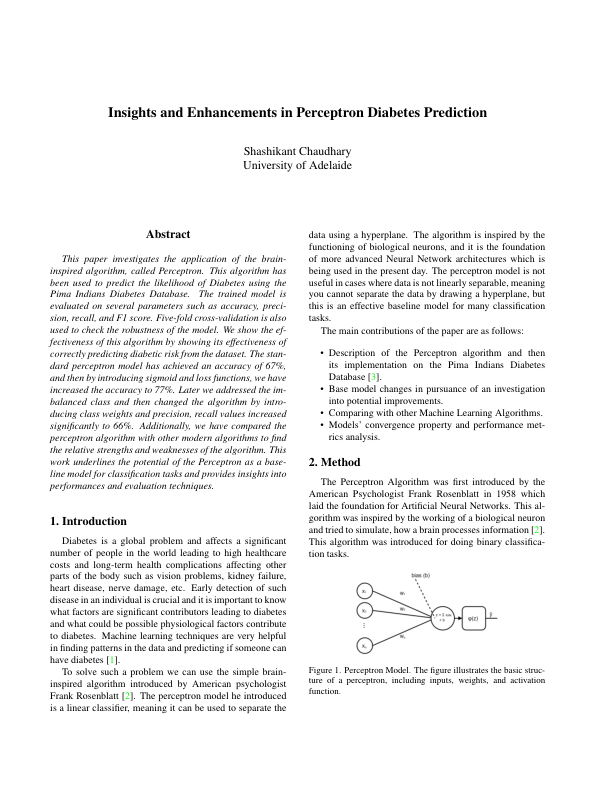

ASSIGNMENT 1 · INDIVIDUAL COURSEWORK
Perceptron and diabetes-risk classification
Built and evaluated a perceptron classifier on the Pima diabetes dataset, then explored sigmoid activation, cross-entropy loss and class weighting. Compared precision, recall and F1 against logistic regression, SVM, Random Forest and XGBoost.

THE ACTUAL REPORT